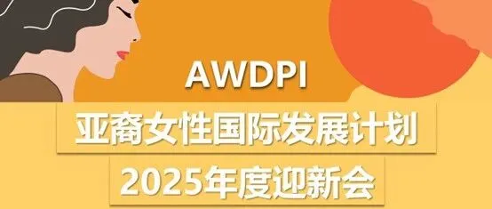
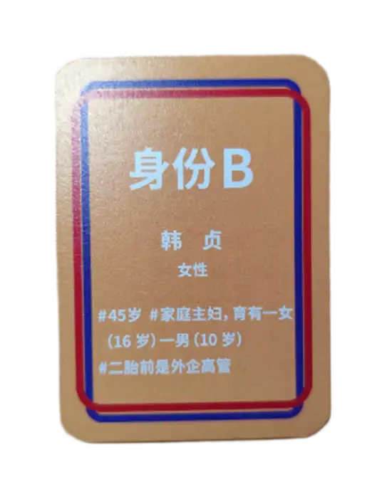
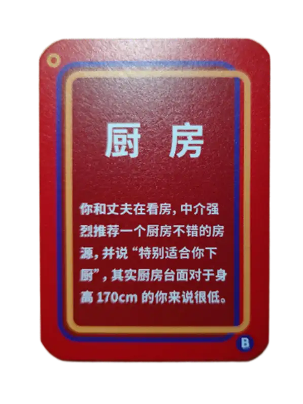
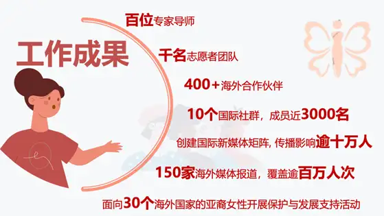

2025 年 ，AWDPI 迎来了新一批志愿者 。8 月 ，我们举办了一场温暖而有力量的迎新会 ，向新伙伴们传递组织的使命与愿景 ，并希望在互动中让她们感受到来自同伴的支持与关怀。
从调研到行动：全球支持网络的诞生
2020年 ，一项关于海外华人权益受损的调研 ，意外接到大量海外华人女性的家暴求助。这一发现揭⽰出：在跨国生活的女性群体中 ，暴力问题更加隐蔽，她们也更难获得支持。 以此为契机，Avoice项目诞生了。
在此次迎新会上，创始人Yimar介绍道，Avoice是一个国际援助公益项目，为遭受家庭暴力的亚裔女性提供多维援助与资源链接支持。起初，项目仅在比利时运作，后来逐步拓展到英国、美国、澳大利亚、泰国等多个国家和地区，形成了跨国合作机制。
五年过去，Avoice已成长为跨越多个国家和地区的女性保护组织——AWDPI（亚裔女性国际发展计划），通过一线援助、对外合作、 内部支持及国家办公室的协作，AWDPI 已形成覆盖语言 、法律、心理、社会融入等多维度的援助体系。如今，它成为了无数海外亚裔女性最坚实的声音与依靠。
另一位 创始人刘锋表⽰，“每一个人 ，都是组织的主人。”这一理念鼓励每一位成员以“我的机构”的心态参与建设，让公益真正属于组织的每一个人，属于社会的每一个人。
因信念相聚：让平等成为共同语言
在迎新会上 ，AWDPI的老成员向新志愿者们系统介绍了组织的愿景、架构与文化，并设计了互动环节，旨在帮助新加入的伙伴彼此了解、表达自我、建立链接。
活动中 ，志愿者们以情景桌游《她的尴尬现场》为载体，分组探讨日常生活中常见的性别不平等情境。有人选择沉默，有人尝试委婉回应，也有人勇敢地直接发声。讨论中，资深性别平等领域工作者王艳萍还结合现实案例进行解读，引发了大家跨视角地深入思考与真挚共鸣。


在优秀志愿者分享环节，法律支援处志愿者常靖梓说：“每个个案的成功 ，靠得是整个部门的通力协作。AWDPI的伙伴们纯粹且坚定 ，让我感受到真实的力量。”靖梓因兴趣而来 ，为性别平等事业而留下。
人力资源处志愿者周文心说：“在人力资源表上看到的每一个名字，都对应着一个正在行动的人。我希望任何认同平权、愿意为之努力的人 ，都可以骄傲地自称女性主义者。”在分享自己对AWDPI的未来期待时，她引用了一位曾经接受过AWDPI救助的志愿者的话，“我为我自己而来，为我们而来，为更多女性而来。”这种从受助者到行动者的转变，正是 AWDPI 理念最动人的体现—被看见的女性，也在用自己的力量照亮他人。
未来，AWDPI将持续推动海外亚裔女性议题进入公共视野，将继续举办多元主题工作坊、加强各国办公室协作，并探索更多跨界合作项目，为女性创造更安全、更有尊严的生活环境。

历经五年的成长与不同国家成员们的努力，AWDPI 已在无数个案与故事中证明：公益是共建的事业，是属于每一个人的力量。
加入我们 ，让世界少一点暴力 ，多一分平等。
撰稿｜AWDPI培训部
编辑｜伊哲
排版｜王小涵